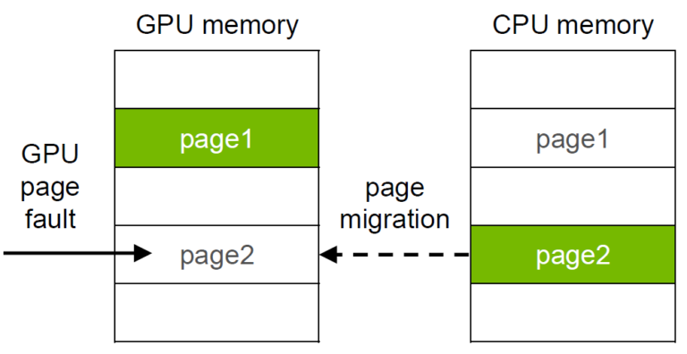
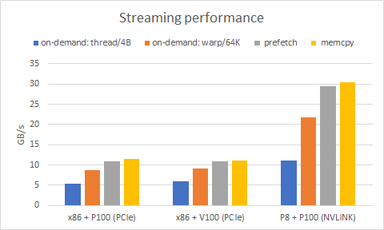

25) Practical CUDA#
Last Time:
GPUs and CUDA
Kernel syntax examples
Thread hirerachy
Memory
Today:
When to use a GPU?
Practical CUDA
Memory
3.1 On memory coalescing and strided accessTuckoo demo for CUDA codes
1. When to use a GPU?#
GPUs have 2-4x greater floating point and bandwidth peak for the watts
also for the $ if you buy enterprise gear
better for the $ if you buy gaming gear
Step 1 is to assess workload and latency requirements


Don’t waste time with GPUs if
your problem size or time to solution requirements don’t align
if the work you’d like to move to the GPU is not a bottleneck
if the computation cost will be dwarfed by moving data to/from the GPU
often you need to restructure so that caller passes in data already on the device
can require nonlocal refactoring
Almost never: pick one kernel at a time and move it to the GPU
Real-world examples: DOE ACME/E3SM projects (to pick on one high-profile application) has basically done this for five years and it still doesn’t help their production workloads so they bought a non-GPU machine
Okay, okay, okay. What if I have the right workload?#
Terminology/Intro#
On the CPU, we have a thread with vector registers/instructions
In CUDA, we write code inside a single vector lane (“confusingly” called a CUDA thread)
To get inside the lane, we launch a kernel from the CPU using special syntax. For example:
add<<<numBlocks, blockSize>>>(N, x, y);
needs to be compiled using
nvcccompilerLogically 1D/2D/3D rectangular tiled iteration space

There are many constraints and limitations to the iteration “grid”

Control flow for CUDA threads is nominally independent, but performance will be poor if you don’t coordinate threads within each block.
Implicit coordination:
Memory coalescing
Organize your algorithm to limit “divergence”
Explicit coordination:
Shared memory
__syncthreads()Warp shuffles
We implement the kernel by using the
__global__attributeVisible from the CPU
Special built-in variables are defined
gridDim: dimension of the gridblockIdx: block index within the gridblockDim: dimensions of the blockthreadIdx: thread index within the block.
There is also
__device__, which is callable from other device functionsCan use
__host__ __device__to compile two versions

How does this relate to the hardware?#
Each thread block is assigned to one streaming multiprocessor (SM)
Executed in warps (number of hardware lanes)
Multiple warps (from the same or different thread blocks) execute like “hyperthreads”
2. Practical CUDA#
CUDA Best Practices Guide#
Occupancy#
Thread instructions are executed sequentially in CUDA, and, as a result, executing other warps when one warp is paused or stalled is the only way to hide latencies and keep the hardware busy. Some metric related to the number of active warps on a multiprocessor is therefore important in determining how effectively the hardware is kept busy. This metric is occupancy. [emphasis added]
Reality: occupancy is just one aspect, and often inversely correlated with keeping the hardware busy (and with performance).
Occupancy is the ratio of the number of active warps per multiprocessor to the maximum number of possible active warps.
If your kernel uses fewer registers/less shared memory, more warps can be scheduled.
Register/shared memory usage is determined by the compiler.
Code example:
1__global__ void add(int n, float *x, float *y) {
2 int index = blockIdx.x * blockDim.x + threadIdx.x;
3 int stride = blockDim.x * gridDim.x;
4 for (int i = index; i < n; i += stride)
5 y[i] += x[i];
6}
! nvcc -c ../cuda_codes/module7-3/add.cu --resource-usage
/bin/bash: line 1: nvcc: command not found
This shows us PTX information, where PTX is a low-level parallel thread execution virtual machine and instruction set architecture (ISA). PTX exposes the GPU as a data-parallel computing device.
ptxas: PTX programs are a collection of text source modules (files). PTX source modules have an assembly-language style syntax with instruction operation codes and operands. Pseudo-operations specify symbol and addressing management. Theptxasoptimizing backend compiler optimizes and assembles PTX source modules to produce corresponding binary object files.
Understanding the ptxas info:
Find the documentation page here.
gmem: global memorystack frameis the per thread stack usage used by this function.spill storesandspill loadsrepresent stores and loads done on stack memory which are being used for storing variables that couldn’t be allocated to physical registers.Number of used
registersis pretty self-explanatoryAnd amount of total space allocated in constant bank,
cmem, is shown.On more modern versions, also amount of shared memory,
smem, can be shown.
Remarks:
A stack is not a concept that is unique or specific to CUDA. A stack frame is simply the space utilized by the stack, or the space utilized to conduct a particular operation on/with the stack (such as a function or subroutine call).
Spill stores and spill loads relate to the usage of variables in the logical local space. Such variables may manifest in a register, or they may manifest in DRAM memory, or perhaps the caches.
The GPU is a load/store architecture for the most part, so when it comes time to use variables in calculations, they almost universally manifest in GPU registers.
1__global__ void copy(float *dst, float *src) {
2 int iblock = blockIdx.x + blockIdx.y * gridDim.x;
3 int index = threadIdx.x + TILE_SIZE * iblock * blockDim.x;
4 float a[TILE_SIZE]; // allocated in registers
5 for (int i=0; i<TILE_SIZE; i++)
6 a[i] = src[index + i * blockDim.x];
7 for (int i=0; i<TILE_SIZE; i++)
8 dst[index + i * blockDim.x] = a[i];
9}
! nvcc -c ../cuda_codes/module7-3/copy.cu --resource-usage -DTILE_SIZE=16
/bin/bash: line 1: nvcc: command not found
The NVIDIA Nsight Occupancy Calculator can compute occupancy based on the register and shared memory usage.
You can tell the compiler to reduce register usage, sometimes at the expense of spills.
! nvcc -c ../cuda_codes/module7-3/copy.cu --resource-usage -DTILE_SIZE=16 --maxrregcount 24
/bin/bash: line 1: nvcc: command not found
In the example above, we have used the --maxrregcount compiler flag that specifies the maximum amount of registers that GPU functions can use.
Until a function-specific limit, a higher value will generally increase the performance of individual GPU threads that execute this function. However, because thread registers are allocated from a global register pool on each GPU, a higher value of this option will also reduce the maximum thread block size, thereby reducing the amount of thread parallelism. Hence, a good
maxrregcountvalue is the result of a trade-off.
Further reading:#
Vasily Volkov (2010) Better Performance at Lower Occupancy (slides)
Vasily Volkov (2016) Understanding Latency Hiding on GPUs (very in-depth)
Kasia Swirydowicz (2018) Finite Element Stiffness Matrix Action: monolithic kernel optimization on Titan V
3. Memory#
GPU memory is not CPU memory

Duh, so why does NVIDIA publish this?

Getting your memory into position is often the hardest part of CUDA programming.
You need to:
Allocate memory on the GPU:
cudaMalloc(&xdevice, N*sizeof(double));
Populate it from the host:
cudaMemcpy(xdevice, xhost, N*sizeof(double), cudaMemcpyHostToDevice);
Repeat for all data, including control parameters
Easy to forget, ongoing maintenance/complexity cost
Unified/managed memory#
This hardware/software technology allows applications to allocate data that can be read or written from code running on either CPUs or GPUs. Allocating Unified Memory is as simple as replacing calls to
malloc()ornewwith calls tocudaMallocManaged(), an allocation function that returns a pointer accessible from any processor.
Allocate “managed” memory, accessible from CPU and GPU:
cudaMallocManaged(&x, N*sizeof(float));
How?

With OpenACC, you can make all dynamic allocations in managed memory. Example:
pgcc -ta=tesla:managedThe GPU probably has less memory than you have DRAM
Really convenient for incremental work in legacy code
Performance isn’t great without
cudaMemPrefetchAsync

Further reading: Maximizing Unified Memory Performance in CUDA
3.1 On memory coalescing and strided access#
__global__ void strideCopy(float *odata, float* idata, int stride) {
int xid = (blockIdx.x*blockDim.x + threadIdx.x)*stride;
odata[xid] = idata[xid];
}
This kernel copies data with a stride of stride elements between threads from idata to odata.
ensuring that as much as possible of the data in each cache line fetched is actually used is an important part of performance optimization of memory accesses on these devices.

In this case, threads within a warp access words in memory with a stride of 2. This action leads to a load of eight L2 cache segments per warp on a Tesla V100 (compute capability 7.0).
We lose half of the bandwidth for stride=2:
In fact, a stride of 2 results in a 50% of load/store efficiency since half the elements in the transaction are not used and represent wasted bandwidth.
As the stride increases, the effective bandwidth decreases until the point where 32 32-byte segments are loaded for the 32 threads in a warp.
We can do better by aligning the memory loads, stride size and warp size.

4. Tuckoo demo for CUDA codes#
The Tuckoo cluster is equipped with four NVIDIA P100s. To be able to compile and execute CUDA code on one of the GPU nodes, we first need to log in on an interactive node.
An interactive node on a cluster is often a node that is dedicated to quick compilation/testing/debugging of your codes-not to high-demanding or large-scale computations-. If you misuse an interactive node, a cluster admin might kick you out of that node.
For tuckoo,
node8is the node dedicated for interactive usage, where you can find thenvcccompiler to compile CUDA codes.
Once you are logged in on tuckoo using
ssh your_user_name@tuckoo.sdsu.edu
You will see that you are logged in on the login node because the prompt will show
[your_user_name@tuckoo ~]$
Now you can use rsh to connect to node8 by simply running:
rsh node8
and you will see that you are indeed on node8 because the prompt has changed to:
[your_user_name@node8 ~]$
Now you can compile any CUDA code by invoking the nvcc compiler and execute it by sending it to the Slurm batch scheduler via a batch script.
You can find an example of a batch script to execute our ./hello_world cuda code in batch_scripts/batch-cuda.
1#!/bin/sh
2
3#note: run cuda hello-world on a single node, using a GPU
4
5#SBATCH --job-name=cuhello
6#SBATCH --output=%A-cuhello.out
7#SBATCH --ntasks=16
8#SBATCH --constraint=P100
9
10export OMPI_MCA_pml=ob1
11export OMPI_MCA_btl=tcp,self
12
13#require tcp over infiniband
14export OMPI_MCA_btl_tcp_if_include ib0
15
16./hello_cuda
17
18#-------------------------------------------------------------
Notice the
#SBATCH --constraint=P100
directive that tells Slurm to execute this code on one of the available compute nodes equipped with the P100s.